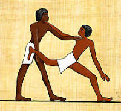
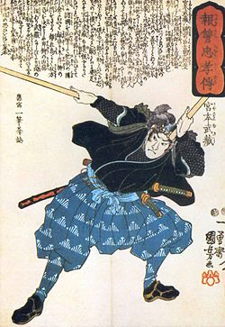
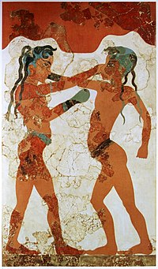

Основні Поняття
Єдиноборства це:
Бій, боротьба один на один між двома противниками, поєдинок.
види спорту в яких два учасники фізично змагаються один з одним, один на один; діючи в рамках обумовлених правил вони проводять різні прийоми з метою нанести супернику максимальної фізичної шкоди або поставити його в невигідне становище, а також захищаються від аналогічних прийомів суперника.
Правила
В спортивних єдиноборствах існують чітко визначені правила проведення бою, що покликані звести травматизм до мінімуму. Учасник може перемогти в поєдинку достроково завершивши його або набравши більше балів ніж опонент у підсумку.
Найпоширеніші
До найпоширеніших єдиноборств входять: змішані бойові мистецтва, бокс, боротьба, дзюдо, фехтування, сават, кікбоксинг, тайський бокс (муай тай), бірманський бокс (летвей), саньда, тхеквондо, капоейра, бразильське джіу-джитсу, історичний середньовічний бій, самбо, сумо, кіокушинкай, кудо (Дайдо Дзюку).
Історія
Східна Азія
У прадавніх легендах бойових мистецтв існує історія про індійського монаха Бодхідхарма, який нібито жив близько 550 р. до н. е. Йому віддається честь заснування медитативної філософії дзен буддизму та впливу на мистецтво бою без зброї у Шаолінському манастирі в Китаї. Такі бійцівські чесноти, як дисципліна, смирення, самообмеження та повага, є атрибутами цієї філософії. У навчанні бойовим мистецтвам в Азії історично дотримувалися культурних традицій практики типу вчитель-учень. Учнів за жорсткою ієрархічною системою тренував майстер-інструктор. У багатьох країнах такі місцеві бойові мистецтва як Те у Окінаві, Кендзюцу та Дзюдзюцу у Японії, та Тек'єн і Субак у Кореї змішалися з іншими і, наприкінці дев'ятнадцятого та у двадцятому сторіччі, розвинулися у деякі, відоміші бойові мистецтва: Карате, Айкідо та Тхеквондо.
Європа
Бойові мистецтва існували й в класичній європейській цивілізації. Найбільше, це ймовірно стосується Стародавньої Греції, де спорт був складовою частиною ладу життя. Давньогрецький бокс, боротьба та панкратіон — поєднання бою на кулаках та боротьби) були представлені на стародавніх Олімпійських змаганнях. Римляни представляли гладіаторські бої як публічну виставу.
Північна та Південна Америка
Корінні народи Північної та Південної Америки тренувалися у володінні власними бойовими мистецтвами починаючи з дитинства. Чоловіків Перших Націй (корінного населення на території Канади) та рідше, жінок, називали воїнами лише після бою, де вони себе показали. Більшість племен обирали майбутніх воїнів, які спеціалізувалися на луках, ножах, духових трубках, списах та бойових палицях, з раннього юнацтва. Особлива перевага віддавалася бойовим палицям, оскільки соціальний статус воїна зростав саме коли він вбивав ворога у поєдинку віч-на-віч. Воїни вигострювали свою майстерність у володінні зброєю та техніці переслідування шляхом тренування протягом усього життя.
Африка
Відомо про існування боротьби та стилів із захопленням/зчепленням у Західній Африці. «Бій на палицях» складає важливу частину культури зулусів у Південній Африці.